When we think of “innovation” in Mountain View, we often think of companies like Shockley, Fairchild Semiconductor, Intel and others, who created processes and products that launched, enhanced or furthered the various technology industries we know today.
But prior to the change to technology, this area was an agricultural powerhouse. Many early innovators and patent holders created processes and devices to address the needs of agriculture. Some of them were well-known residents, while for others, few records remain of their accomplishments. For example, only the record of the patent approval may be the most we know about their efforts.
It’s no surprise that some of the patent holders and innovators worked in or owned machine shops. It’s been a fun search for participating board members to find patents granted to local residents. Here are the stories of nine of them, whose inventions were patented between 1868 and 1952.
Edward Hawthorne: A Designer of Escape
Fire escape · Patented 1868
In 1868 at the age of 44 Edward Hawthorne patented the “Nonpareil” Fire Escape. In the description of the device, he states, “The nature of my invention is to provide an improved means of escape from burning buildings, to be known as the ‘Nonpareil Fire-Escape.’” The patent description continues to state, “The lower portion of the apparatus consists of a flat bottom, and the upper part is attached to a canvas bag, by means of eyelets, rings, and cords, the apparatus being so arranged as to be lowered by the person occupying it.”
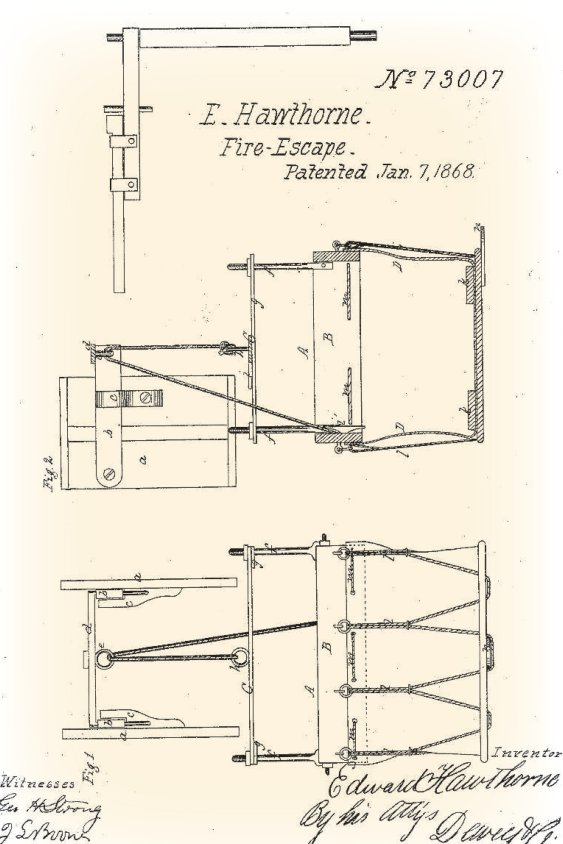
The drawing is a bit difficult to understand — a person using the device lowers themselves in a bag to the ground, sort of like rappelling down a cliff! The apparatus is mounted over the window on the inside of the house.
Hawthorne emigrated from Dublin, Ireland, landing in San Francisco on May 18, 1850 at the age of 26 — most likely drawn by the Gold Rush. We don’t know what he did or where he lived. In 1874 Hawthorne was evidently living in San Francisco. That year he joined as a charter member of the “Territorial Pioneers of California.” This organization was a group whose membership was limited to those who came to California prior to September 9, 1850, the day that California became a state. On the membership roster he listed his occupation as “real estate”. This raises the question — how was he able to invest in real estate? Had he made any income from his invention?
The patent was registered when he lived in Mountain View. In 1868, Mountain View was located on the San Francisco–San Jose Road (or El Camino) near Grant Road. The population was about 300–400 people. After the railroad was established in 1864, the town slowly became centered around the train stop on Castro Street. A hotel and livery stable were built. In 1870 the Weilheimer brothers built the general store at 124 Castro Street.
The 1880 census showed him living in San Francisco, married with four children. He was 26 years older than his wife, who was born in Holstein, Germany. His occupation was listed as “capitalist”. This nomenclature was defined as people who received income primarily generated by rental property or loans, but also from stocks, bonds, or other investments.
At some point the family returned to Mountain View. The December 31, 1887, death notice of the couple’s one-year-old baby son, Garrett, appears in the San Jose Mercury News. An 1889 Mountain View business directory lists E. Hawthorne, but no additional information. The family stays for a few more years before moving back to San Francisco. Hawthorne died there on August 11, 1899, at the age of 75. He left a wife and eight surviving children.
Henry Rengstorff: An Earth Mover
Excavator · Patented 1885
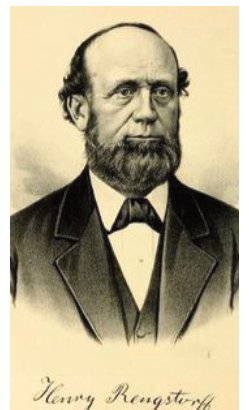
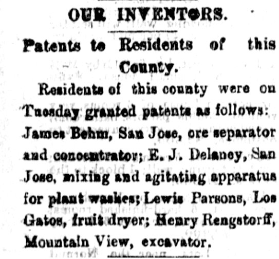
Rengstorff, one of the best known early residents of Mountain View, received his patent in 1885 at the age of 56. The excavator is described in the following manner: “My invention is designed and used for hoisting and removing the earth from the bed of dry creeks. It is applicable to the work of forming ditches and drains or excavating of any sort not requiring great depth below the surface.” The device was a simple and inexpensive solution that could be assembled by low-skilled labor. Much of Mountain View at the time of his invention was planted in hay and wheat, and his device enabled a farmer to create irrigation ditches.
Like Edward Hawthorne, Rengstorff arrived in California in 1850 when he was 21 — drawn by the Gold Rush. He was born in Bremen, Germany. Arriving with just $4 in his pocket, he worked on the Jack Robinson, a bay steamer sailing between San Francisco and Alviso, and then as a farm laborer in Santa Clara Valley.
By 1853 he had saved enough to purchase 290 acres in the Evergreen Valley area of San Jose. Over the next twenty years Rengstorff purchased more than 2,000 acres located on six farms that produced grain, hay, lumber, cattle and fruit.
Rengstorff married Christine Hassler, also a native of Germany, in 1857. The couple had seven children; the youngest died at the age of five, the others reached adulthood.
In 1859 he established a ship landing on a slough close to the bay — he called it Rengstorff Landing. Heavily laden scows carrying hay and other crops would sail from the landing to San Francisco. Their beautiful house was located on Stierlin Road. Built in the Italianate style, it was completed in 1867. The house was eventually moved to Shoreline Park and restored to its present condition.
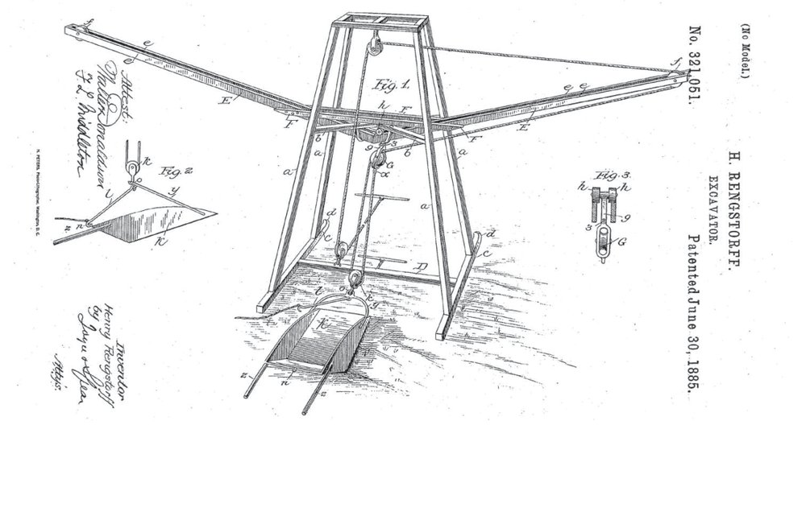
Rengstorff believed in public education and deeded land to establish a grammar school for a payment of $1. The school was located near his house and was named after John Whisman, an early settler of Mountain View.
He was also an innovator. The family was among the first in the area to have indoor plumbing and electricity. His patent for an excavator was no doubt inspired by the need to move water around to irrigate crops on his properties.
The family was active in the community. Henry belonged to an amateur dramatic club. He and his wife were members of the Presbyterian Church, the Republican Party and among the founders of the Whisman School District.
Rengstorff died in 1906 at the age of 77. He was one of the wealthiest and most respected citizens in the community. His funeral was well attended. Prominent local men served as pall bearers. Rengstorff Park and Rengstorff Avenue are named after him.
Which makes one wonder — did Rengstorff and Edward Hawthorne know each other? Did they become acquainted when they both arrived in San Francisco in 1850? Why did Edward settle twice in Mountain View? Did Rengstorff help finance Edward’s patent? We’ll never know the answers to these and other questions regarding the two men.
Jean F. Deray: Planning for a Deep Dive
Diving suit · Patented 1914
The crazy-looking diving device that Mountain View resident Jean F. Deray patented was inspired by the early 1900s worldwide fascination and demand for deep diving capability technologies. Inventors in Europe and the US were working feverishly to perfect diving suits.
Numerous shipwrecks, everything from 16th-century Spanish galleons to large shipwrecks of the 1800s, enticed people with dreams of finding treasure and wealth beneath the waves. Mr. Deray, a machinist and engineer, received a patent for the diving suit in May of 1914. He also patented an air pump for furnishing air to the diver. He was 38 years old.
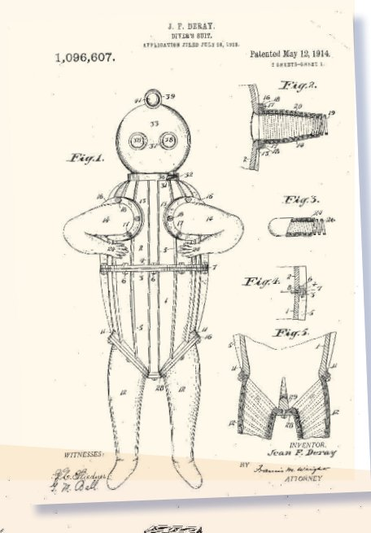
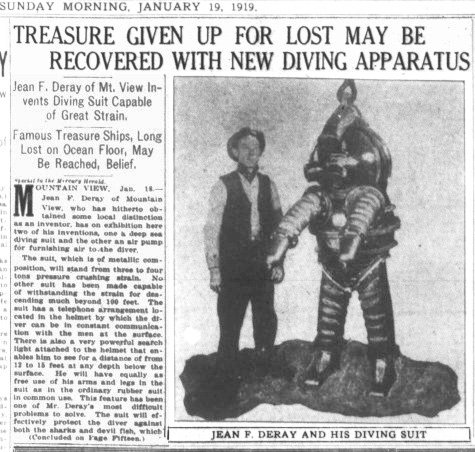
The patent description states, “The object of the present invention is to provide a diver’s suit which will withstand very great external pressure, and therefore be capable of being lowered to very great depth.”
A year and a half later a company was established — the Standard Diving Company. Three men (including Deray) financed the invention. Deray and the two other owners of the invention created a corporation. In 1919 the inventions were displayed at the Neuroth Building (now the site of the Olympus Café). It is not known what success, if any, the company had in producing and selling the suits.
Deray initially worked in San Jose in a foundry. In 1904 he is mentioned in the San Jose Mercury News when he is hired by the San Jose fire department as an engineer. Deray worked there for over four years.
About 1908 he moved to Mountain View, where he lived for the rest of his life. He worked as a machinist at the Hendy Iron Works in Sunnyvale, a large manufacturer of mining equipment. He also worked as a mechanic in the Santa Clara County corporate yard in Mountain View.
It appears that 1914 was a good year for him. Not only was he granted a patent, but he also married Bertha Heidt. A year later the couple built a house at 1349 Latham. The house is still at this location. Deray died in 1955 at the age of 79 years. His widow survived him.
Andrew Williamson: Tweaking a Common Device
Screen-door latch · Patented 1919
The device that Andrew Williamson patented appears to be a tweaking of a common device — the screen door latch. The patent description states “the primary object of the invention is, the provision of a fastener of this character wherein a closure can be readily and easily locked”.
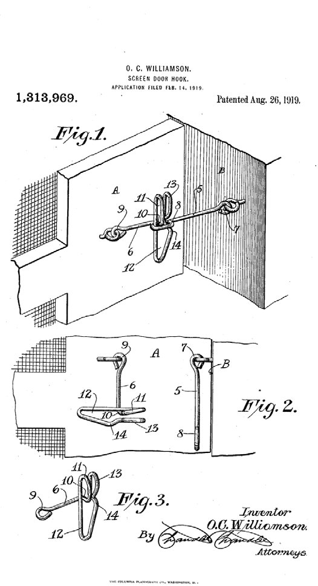
Williamson was born in Sweden and immigrated to this country in 1868 at the age of 15. He settled in Des Moines, Iowa and later married Viola Fleming in 1895 at the age of 42. He was 15 years older than her. Based on the locations of the birth of their numerous children, they lived in Iowa, Missouri and South Dakota. The family settled in Mountain View about 1907. The 1910 and 1920 census showed the family living at 1267 Washington Street.
Williamson worked as a contractor and painter. His patent was granted in 1919 when he was 66 years old. He evidently saw the need for a latch that provided more security. We don’t know if the device was manufactured.
The couple had eight children — five sons and three daughters. Perhaps that is why he wanted to have a screen door latch that easily locked!
Tragically Williamson died in September 1920 at the age of 68 after a long illness of heart disease. His youngest child was only ten years old. The Register-Leader newspaper wrote a respectful account: “Mr. Williamson was a good man. He was industrious and gave an honest day’s work for an honest day’s pay.”
Later Mrs. Williamson moved to San Francisco with some of her children. She passed away there in 1950. The house that they owned on Washington Street was later destroyed in the construction of the Shoreline overpass above the train tracks and the Bailey/Shoreline widening project.
George Pattberg: Prolific Creator
Can opener · Patented 1922
Perhaps one of the most intriguing of the men we profiled is George Pattberg. He was born in Germany in 1860 and immigrated to Utah in 1883. He married Elizabeth Hoffman, also an immigrant from Germany. Their daughter was born in 1890 in Utah. Even though he was not living in Mountain View when his patents were granted, we are claiming him as our own because of the interesting story of his life.
By the mid-1890s he is living in Oakland, where Pattberg listed his occupation in several directories as that of a machinist working for the Southern Pacific Railroad. The 1900 census showed him living in Fremont township (rural Mountain View) with his wife, daughter and mother-in-law.
Pattberg quickly established a machine shop — the Mountain View Automobile and Machine Works — in 1901 in a newly built facility located on the corner of View and Dana streets. The Register-Leader newspaper noted in 1903 that George Pattberg “makes a specialty of building and repairing automobiles.”
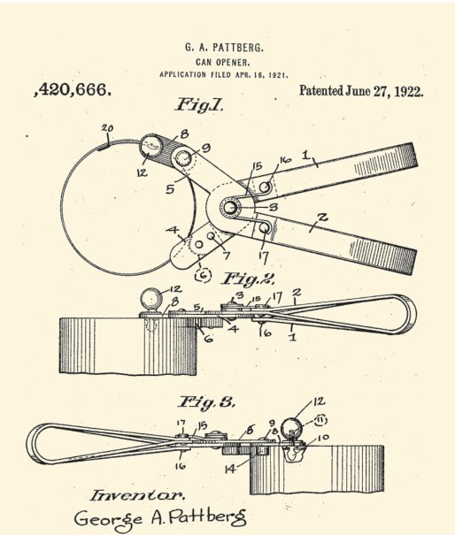
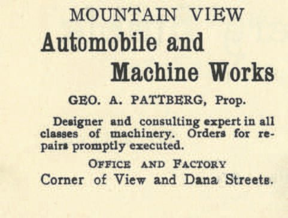
The early 1900s was a crazy and exciting time for the beginning of the automobile industry. Evidently machine shops all around the US were manufacturing their own versions of an automobile. The conditions were similar to those of the early dot-com boom at the beginning of this century. Many individuals and companies were trying to figure out how to become established automobile designers, suppliers, repair shops and manufacturers. As a point of reference, Henry Ford introduced the Model A in 1903. About 1,700 automobiles were produced that year by the Ford Motor Company. The Oldsmobile company produced over 3,000 cars in 1903.
In 1902 the city of Mountain View was incorporated, with Pattberg being a strong proponent for the incorporation. Serving as the first trustees (or council members as they are called today) were George Pattberg and his friend Dr. O. C. Gates and three other prominent citizens.
George Pattberg was one of those men working to assemble automobiles in his shop. The Register-Leader newspaper noted at the end of 1903 Pattberg “is building a fine auto car for Dr. Gates.” Apparently, he had been working on it for almost a year. “Sometimes it ran and sometimes it did not” according to the newspaper.
According to a 1927 article in the Register-Leader that covered the early history of the town, sometime in early 1904 —
The night before an announced public demonstration [of the new auto], Pattberg’s house, workshop and car took fire mysteriously and burned to the ground. Pattberg left here soon after and never returned.
One can imagine that this event must have devastated George Pattberg and Dr. Gates as well. This makes one wonder — why did the newspaper describe the fire as “mysterious”? Why did Pattberg leave? Did he face scorn from his fellow residents?
By 1920 the family was living on a farm in Concord, California. It is after this point that he applied for and received four patents. The first, in January 1922, was for a rack to hold brooms and mops. The second was for a rodent trap that shoots a projectile at the offending critter. The third was for the can opener. The patent application states “The principal object of this invention is to provide an improved can opener. A further object consists in providing a can opener that will be simple and inexpensive to construct.” The final patent was for a variable speed transmission.
We don’t know if he was able to sell his patents or create any actual products. Mr. Pattberg passed away in 1926 at the age of 66 years, leaving a wife and daughter.
Isaac F. Stemm and John H. Glaze: Answering a Need
Roller cultivator · Patented 1928
The general object of the present invention is to provide a roller harrow particularly designed for use in orchards and other like places where cultivation must be deep and where the machine must run close up to the trees.
From the early 1900s to the 1950s thousands of acres of land in Mountain View, Sunnyvale and Los Altos were planted with plum, apricot and cherry trees producing high-quality products. In 1920, 40% of the prune crop was exported to Europe. This created the need for machinery to serve the orchard industry.
Isaac F. Stemm was a native of Tennessee. In 1892 at the age of 25 he married Effie Moon. They had a son and daughter. The 1900 census showed his occupation as a farmer in Tennessee. Ten years later the census listed him as a tenant farmer in San Jose. He only had a fifth-grade education.
In 1930 he and Effie were living at 412 Central Ave. His occupation is that of farmer. This area of Mountain View contained small fruit orchards. Being an “orchardist” probably gave him the insight to see the need to create a better roller tiller.
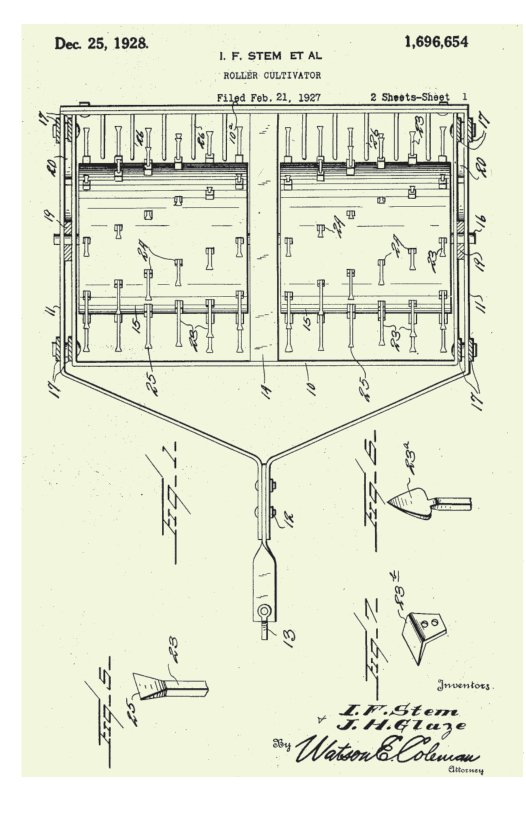
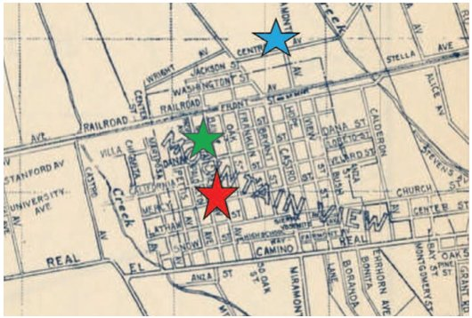
We don’t know how he and John Glaze became collaborators and evidently friends as well.
Cultivation is the practice of working the soil to increase aeration and water flow, and to destroy weeds and/or crop residue. A cultivator is a mechanical implement for breaking up the ground and uprooting weeds. The patent for a roller cultivator was granted on December 25, 1928. Isaac was 61 years of age and John was 67. The patent description further describes their device as well suited for cutting up cover crops, which are planted to manage soil erosion, weeds and pests and increase soil fertility and soil quality.
By 1940 Isaac and Effie were living on Villa Street. Houses in this area were later demolished in the construction of the Shoreline overpass above the train tracks and the Bailey/Shoreline widening project. Isaac passed away in 1948.
John H. Glaze was born in Indiana in 1861. At the age of 21 he married Ruth Marvin. She died only three years later, leaving him with two young boys, Carl and Mark. Seven years later he married Lua Hinshaw. They had two children, Fred and Eileen.
The 1900 census showed them living in Kansas with Glaze’s occupation listed as a harness maker. Ten years later, while still in Kansas, his occupation is shown as a porter. In 1920 the family was living in Nebraska, and his occupation is now that of an electrician.
By the early 1920s Glaze and his family have relocated to Mountain View, where his son Carl owned a plumbing business located at 220 Castro Street. Evidently Glaze worked with or for his son.
An article in the Mountain View Register-Leader of September 30, 1927, states that a shop and garage belonging to his son Carl, located at 1250 Mercy Street, was destroyed by fire. Two automobiles, a truck and the contents are lost, but not the home at the front of the property. It can’t be determined if the business had relocated there from the Castro Street location.
The 1930 census showed Glaze and his wife living in a house that they owned at 484 Bailey Road, which is now Shoreline Boulevard. His occupation is that of a plumber. He passed away in 1936.
It’s unknown if the two were able to license the patent or create a company to produce their invention.
William Formway: Agricultural Inspiration
Walnut huller · Patented 1937
My invention relates to walnut hullers, and more particularly to a machine adapted to hull, wash and separate the hulls from the clean nuts…
William Formway was a prolific creator of mostly agricultural products. He received numerous patents — an apricot slicing machine, a pecan cracker, box folding equipment, a hoist for roofing work, and at least three patents for walnut hullers.
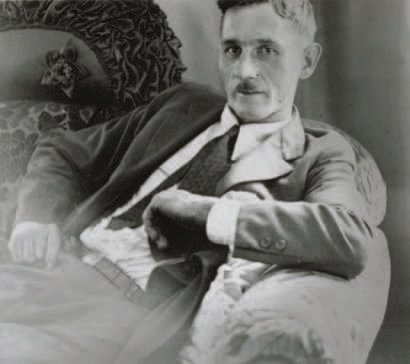
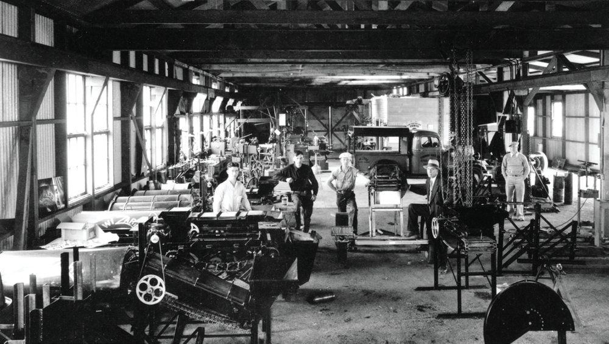
In 1896 he was born in Bakersfield. He moved with his family to what is now Los Altos when he was fourteen. The family lived on a farm on Almond Avenue.
The first record that we could find about Formway is a December 1917 article in The MV Register-Leader newspaper. According to the article, as an employee of the Junction Garage in Mountain View, he slept in the attic. At 5:30 in the morning he was awakened by the sound of the front door being wrenched open. Formway yelled at the intruders to stop. He fired several pistol shots at the two fleeing men. He hit one of the men, who was then captured. The other man escaped and was never apprehended.
In 1918 Formway purchased a half interest in the Junction Garage. Just a week later he married Myrtle Holden of Pettis Avenue. A year later the young couple bought a home on the corner of California and Hope Streets. They lived there for six years.
Formway and a new partner, Elmer Hill, formed a company in 1921 to repair and service automobiles, batteries and starters. At the same time Formway had a new building constructed for the company on California Street. Advertisements for the company appeared in newspapers and business registers. It appears that several partnerships with other men were formed and dissolved.
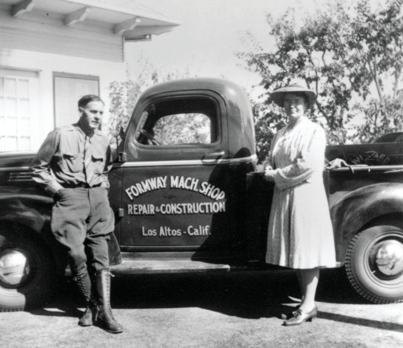
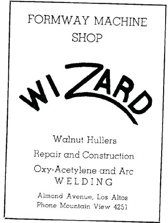
The 1920s were a heady time for companies associated with automobiles, tires and service. In the mid-1930s Formway moved his shop into a large shed on Almond Avenue where his parents lived. Although we think of the area as mainly producing plums and apricots, other tree crops were grown, including walnuts. His father’s property contained walnut trees, as did other small farms in the area.
Removing the outer husk of a walnut is a time-consuming and messy job. Formway worked for several years to perfect a machine to do this task. He called the device the “Walnut Wizard.” He was manufacturing machines prior to the first submission of a patent in 1935.
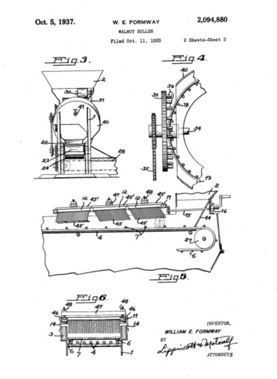
The year 1937 was a time of accomplishment and tragedy. He received the formal paperwork for his first patent on October 5. But less than three months later his son was killed in a traffic accident near Salinas. Early on Christmas morning, Formway and his son (also named William) were driving north on Highway 101. An approaching automobile suffered a blown tire, causing the driver to lose control. In the collision that followed, Formway’s son and the two people in the other car were killed instantly. Formway himself was severely injured and spent months recovering.
Formway continued to refine the Walnut Wizard and was granted two more patents. The Walnut Wizard Manufacturing Company was founded, with at least one partner brought in to help manage the operations.
In 1941 the partnership was dissolved after the development of an apricot slicing machine. Manufacturing was moved to Sunnyvale. At some point the Walnut Wizard Company was moved to Chico, California, where the company still manufactures equipment for the tree nut industry.
After years of ill health, Formway passed away on September 9, 1945. He was only 49 years old. His wife, daughter and father survived him.
Victor A. Benson: Barbecue Perfection
Building construction and barbecue equipment · Patented 1923–1952
The present invention relates particularly to means for effecting the mechanical rotation of a spit of the type used on barbeque stoves.
The last inventor in our series received notoriety in his late teens as a racing bicyclist in San Jose. In August 1894 (at the age of 18) Benson earned a silver cup trophy for the fastest time in a five-mile race. He participated in other races that year and the next. He and co-rider Hardy Downing broke the tandem bicycle record for a one-mile track race with a time of two minutes and three seconds.
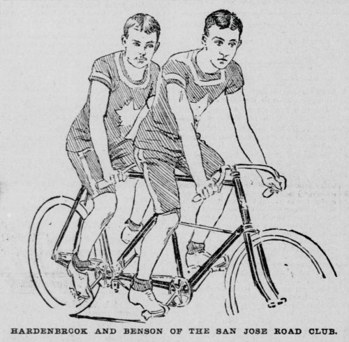
Bicycle riding and racing were very popular in the 1890s and early 1900s. In a time when there was no radio, television or major professional sport teams (other than baseball), local bicycle racing venues and bike clubs filled the gap for fun watching and competitive diversions. San Jose had several banked wooden or cement racetracks with viewing stands that could hold hundreds of people.
Many towns and cities, including Mountain View, had active racing clubs. In addition to sponsoring races, these clubs also provided social activities, such as dances and dinners.
Benson was born in Nevada in 1876. It’s uncertain when his family moved to San Jose. In 1896 he married 18-year-old Edith Greenwood. A son was born two years later. The 1899 San Jose directory (similar to a phone book) showed a business listing of “Benson & Evers” — a wireworks company in downtown San Jose.
The 1920 and 1930 census records showed that the family lived in San Jose. His occupations were listed as a machinist, iron worker or contractor. By 1940 the family had moved to Mountain View. They lived with his father-in-law and another elderly relative. His occupation was listed as an iron worker with his own shop.
The 1950 census indicated that the 74-year-old Benson and his family owned and worked at a barbeque manufacturing company. His 51-year-old son and his wife are listed as well. The extended family included two grandsons at the same address.
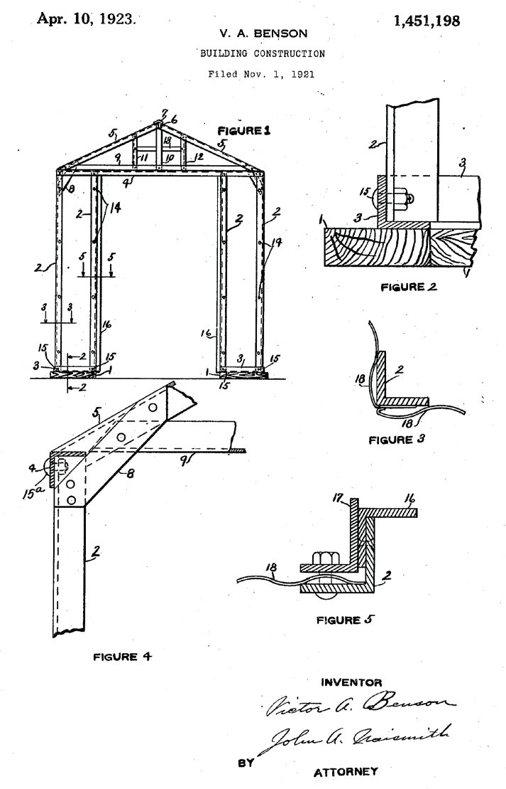
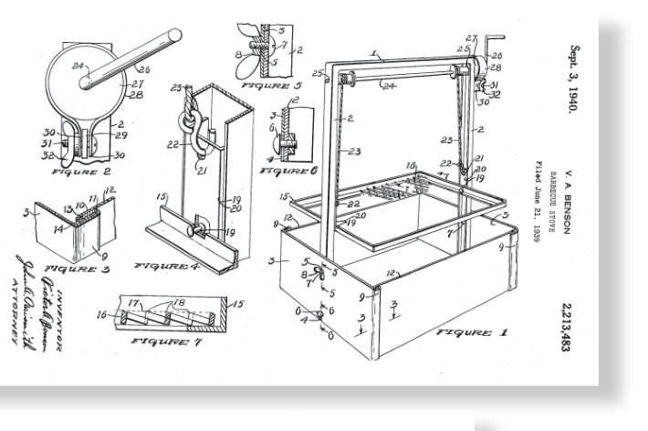
Benson was a prolific inventor. His earliest patent was granted in 1923 for a metal framing system for building a garage or shop. Four more patents were granted for barbeque equipment, in the years 1940, 1942, 1951 and 1952.
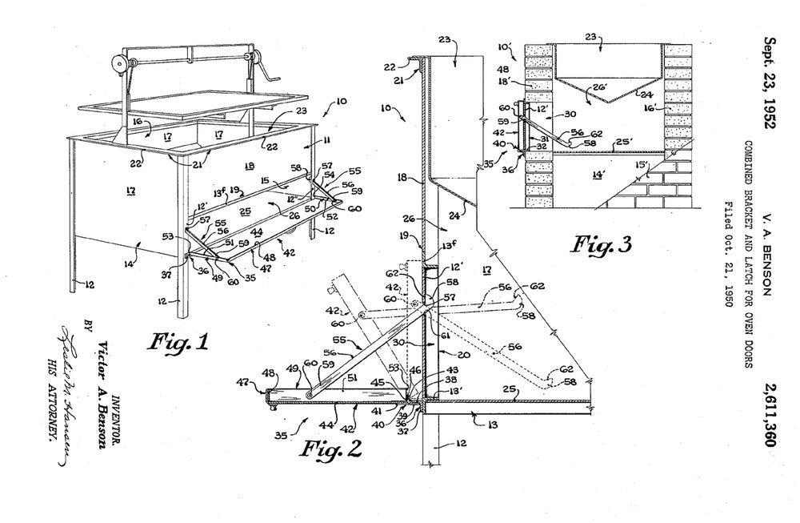
We couldn’t locate any information about the company, as it seems no advertising was placed by the company in yearbooks or newspapers. Our guess is that the company probably produced products and installations for use in public parks, family backyards and restaurants.
What is a patent?
By Sundai Lott, attorney at law
A patent is a right given to an inventor to protect their intellectual property. There are multiple types of intellectual property such as patents, trademarks, copyrights, and trade secrets. A United States patent gives the inventor the right to “exclude others from making, using, offering for sale, or selling” an invention or importing it into the United States.
This language is unique — a United States patent does not give the inventor an affirmative right to make, use, offer for sale, sell, or import the invention. Instead, it is a negative right which allows the inventor to stop others from doing so. If someone infringes your patent, you can initiate legal action. U.S. patent rights are territorial, meaning they are effective only within the U.S. and its territories and possessions.
There are three types of patents: utility, design, and plant patents. Utility patents are granted for inventing a new or improved and useful process, machine, article of manufacture, or composition of matter. Design patents are granted for inventing a new, original, and ornamental design for an article of manufacture. Plant patents are granted for inventing or discovering and asexually reproducing any distinct and new variety of plant.
The type of patent determines how long the patent right lasts. Utility and plant patents have a term of up to 20 years from the date the patent was filed, while design patents are granted for a term of 15 years from the date the patent is granted.
Unlike other types of intellectual property, where rights attach upon creation and/or use, patent rights only occur after an inventor has filed a patent and the patent has been granted by the United States Patent and Trademark Office. For a patent to be issued, the invention must meet four requirements: (1) it must be able to be used (the invention must work and cannot be just a theory), (2) the inventor must provide a clear description of how to make and use the invention, (3) the invention must be new or novel (something that has not been done before), and (4) the invention must not be obvious.
Patent rights have their origin in the United States Constitution, and George Washington was the first patent examiner. The first patent in the United States was granted to Samuel Hopkins on July 31, 1790 for a process to make potash, an important ingredient in fertilizer.
Sharing the story
The series began with a talk at the Association’s event of February 2, 2025. Sundai Lott explained the history of patents and how the process has changed over the past 235 years — since 2010 about 350,000 patents have been issued each year in the United States — and answered many questions from the audience, about the patent process, the legacy of patents (yes, a patent can be inherited) and more. Pamela Baird then presented the stories of the nine local inventors.
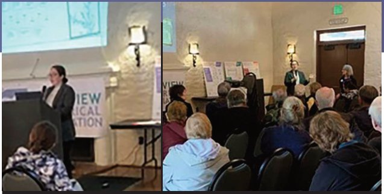
In March 2026 Pamela presented the patent holders of Mountain View to the monthly meeting of SIR (Sons in Retirement). Before the program a singing group serenaded those attending with a song previewing some of the inventions — the first time we have been introduced with music!
The Association and the Mountain View Library also teamed up to produce a hands-on STEAM program that introduced kids to real patents created in Mountain View. Librarian Renee Kidson created fun stations for participants to test their creativity, and Elena Lopez and Pamela Baird explained the features of the diving suit patented by Jean Deray. In July 2026 panels about Mountain View’s inventors were displayed in the City Hall rotunda.
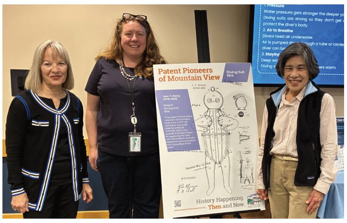
Where this came from
These profiles first appeared one or two at a time in The Mountain ReView, the Association's quarterly newsletter, from Winter 2025 to Winter 2026. They have been gathered here, in order of the first patent each inventor received, with the newsletters' pictures. Every issue is free to read in our newsletter archive.
Do you know more about any of these inventors, or of another early Mountain View patent? Write to info@mountainviewhistorical.org.